Βασικά στοιχεία του Nextcloud Talk
Το Nextcloud Talk σας επιτρέπει να συνομιλείτε και να κάνετε βιντεοκλήσεις στο δικό σας διακομιστή.
Getting started
Chats and calls take place in conversations. You can create any number of conversations. There are different types of conversations:
1. Private (one-to-one) conversations
This is where you have a private chat or call with another Talk user.
In content sidebar, you can find additional information about the person you are chatting with, such as their email address, phone number, or other details they have shared in their profile.

Nobody except you and the other person can see this conversation or join a call in it. You can extend an ongoing call to a new group conversation by adding more people. Call will be continued there without interruption.

If a user becomes unavailable and set an out-of-office status in Personal settings > Availability, you will find additional information in this conversation, such as provided description, absence date, or their replacement person.

2. Group conversations
A group conversation can have any number of people in it.
You can add internal users, email guests, groups or teams to a group conversation upon creation, or when it already exists, via the Participants tab.
A group conversation can be shared with a public link, so guests can join a chat and a call. It can also be opened to registered users (or users from “Guests” app), so they can discover and join this conversation.

3. Note to self
This is a special conversation with yourself. Messages here do not have a limit for editing or deletion. You can use it to:
Take notes: write down ideas, reminders, or important information you want to keep handy.
Create to-do lists: use Markdown syntax to create checklists for tasks you need to complete.
Forward messages from other chat: use the message menu to forward important messages from other conversations to your Note to self.
{kind=link}
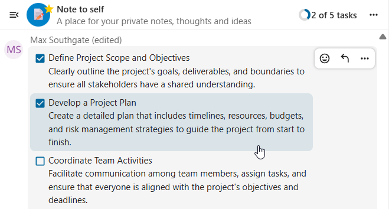
4. Disposable conversations
These conversations cover some special cases and exist for a limited period of time. Retention period can be configured by an instance administration:
Instant meetings: these conversations can be created for quick, ad-hoc meetings. They can be started instantly from the Talk Dashboard.
Event conversations: these are created when set as an event location by Calendar app.
Phone conversations: these are dedicated for SIP dial-in & dial-out phone calls (requires a SIP gateway).
Video verification: these are created, when someone tries to access a public link, protected by password with video verification (deleted instantly after call ends).

Talk Dashboard
The Talk Dashboard is your central hub for managing and accessing your conversations. It provides an overview of your:
Unread mentions and messages in private chats;
Message reminders, scheduled to be tackled on later;
Scheduled meetings, with event details and shortcut buttons to join them;
Shortcut actions to create new conversations, join open ones, or quickly check your media devices.

Δημιουργία συνομιλίας
You can create a private (one-to-one) chat by searching for the name of a user, a group or a team and clicking it. For a single user, a conversation is immediately created and you can start your chat. For a group or circle you get to pick a name and settings before you create the conversation and add the participants.

Εάν θέλετε να δημιουργήσετε μια προσαρμοσμένη ομαδική συνομιλία, κάντε κλικ στο κουμπί δίπλα στο πεδίο αναζήτησης και στο κουμπί φίλτρων και έπειτα στο Δημιουργία νέας συνομιλίας.

Στη συνέχεια, μπορείτε να επιλέξετε ένα όνομα για τη συνομιλία, να προσθέσετε μια περιγραφή, να ρυθμίσετε ένα avatar για αυτήν (με ανεβασμένη φωτογραφία ή emoji) και να επιλέξετε εάν η συνομιλία πρέπει να είναι ανοιχτή σε εξωτερικούς χρήστες και εάν άλλοι χρήστες στον διακομιστή μπορούν να δουν και να συμμετέχουν στη συνομιλία.

Στο δεύτερο βήμα, μπορείτε να προσθέσετε συμμετέχοντες και να ολοκληρώσετε τη δημιουργία της συνομιλίας.
{kind=link}
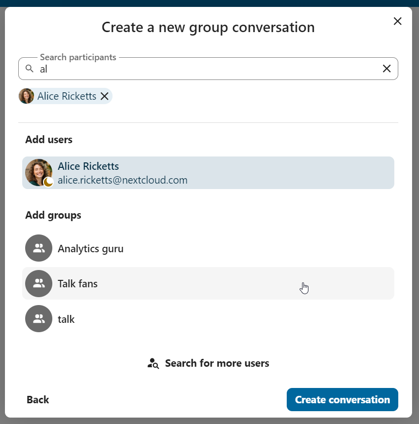
Μετά την επιβεβαίωση, θα μεταφερθείτε στη νέα συνομιλία και μπορείτε να αρχίσετε να επικοινωνείτε αμέσως.

Προβολή όλων των ανοιχτών συνομιλιών
Μπορείτε να δείτε όλες τις συνομιλίες στις οποίες μπορείτε να συμμετέχετε κάνοντας κλικ στο κουμπί δίπλα στο πεδίο αναζήτησης και στο κουμπί φίλτρων και έπειτα στο Συμμετοχή σε ανοιχτές συνομιλίες.
{kind=link}
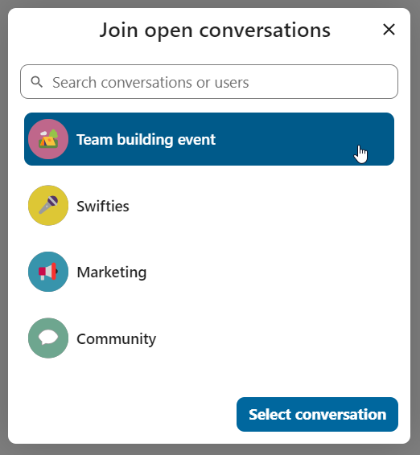
Φιλτράρισμα των συνομιλιών σας
You can filter your conversations using the filter button next to the search field. There are several options for filtering: 1. Unread mentions: view unread private conversations, or group conversations, where you have been mentioned. 2. Unread messages: view unread messages in all conversations you are a part of. 2. Event conversations: view all conversations, created for upcoming or past events.

Στη συνέχεια, μπορείτε να καθαρίσετε το φίλτρο από το μενού φίλτρων.

Archive conversations
You can archive conversations that you no longer need to see in your main conversation list. When a conversation is archived, it will be moved to the Archived conversations section.
An archived conversation will not appear in your main conversation list, but it will still align with notification level set in its settings.
{kind=link}
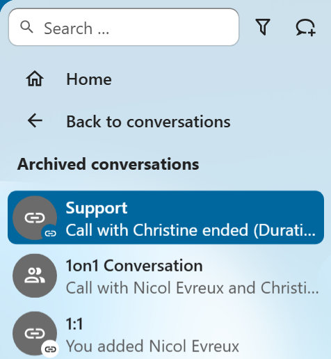
The list is accessible from the button at the bottom of the navigation bar.

Κοινοποίηση αρχείων σε μια συνομιλία
Μπορείτε να κοινοποιήσετε αρχεία σε μια συνομιλία με 3 τρόπους.
Πρώτον, μπορείτε απλά να τα σύρετε και να τα αποθέσετε στη συνομιλία.

Δεύτερον, μπορείτε να επιλέξετε ένα αρχείο από τα Nextcloud Files ή από έναν διαχειριστή αρχείων επιλέγοντας το μικρό συνδετήρα και επιλέγοντας από πού θέλετε να πάρετε το αρχείο.


Μπορείτε να προσθέσετε περισσότερα αρχεία μέχρι να ολοκληρώσετε και να αποφασίσετε να κοινοποιήσετε τα αρχεία. Μπορείτε επίσης να προσθέσετε μια κειμενική λεζάντα στα κοινοποιημένα αρχεία, παρέχοντας μια σύντομη περιγραφή ή πλαίσιο.
{kind=link}
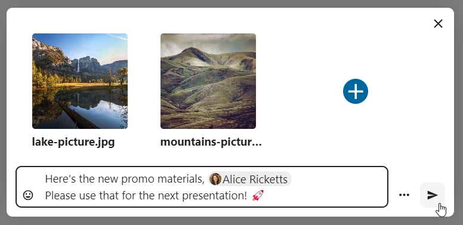
Όλοι οι χρήστες θα μπορούν να κάνουν κλικ στα αρχεία για να τα δουν, επεξεργαστούν ή κατεβάσουν, ανεξάρτητα από το αν έχουν λογαριασμό χρήστη. Οι χρήστες με λογαριασμό θα έχουν το αρχείο να τους κοινοποιείται αυτόματα, ενώ οι εξωτερικοί επισκέπτες θα τα λαμβάνουν ως δημόσιο σύνδεσμο.

Εισαγωγή emoji
Μπορείτε να προσθέσετε emoji χρησιμοποιώντας τον επιλογέα στα αριστερά του πεδίου εισαγωγής κειμένου.
{kind=link}
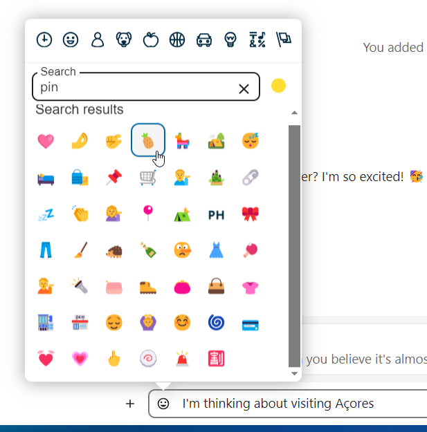
Smart Picker
Smart picker shortcut makes it easier to insert links, files, or other content into your conversations. Just choose the type of content you want to insert (files, Talk conversations, Deck cards, GIFs, etc.) You can also type / in the chat input to open the selector.

Επεξεργασία μηνυμάτων
Μπορείτε να επεξεργαστείτε μηνύματα και λεζάντες για κοινοποιήσεις αρχείων μέχρι 6 ώρες μετά την αποστολή.

Χρήση Markdown
Μπορείτε να βελτιώσετε τα μηνύματά σας με υποστήριξη σύνταξης markdown. Δείτε τη λίστα για χρήση:
Επικεφαλίδες και διαχωριστικά
# Heading 1
## Heading 2
### Heading 3
#### Heading 4
##### Heading 5
###### Heading 6
Heading
===
Normal text
***
Normal text
Ενσωματωμένες διακοσμήσεις
**bold text** __bold text__
*italicized text* _italicized text_
`inline code` ``inline code``
```
.code-block {
display: pre;
}
```
Λίστες
1. Ordered list
2. Ordered list
* Unordered list
- Unordered list
+ Unordered list
Παραθέσεις
> blockquote
second line of blockquote
Λίστες εργασιών
- [ ] task to be done
- [x] completed task
Πίνακες
Column A | Column B
-- | --
Data A | Data B
Polls in chat
You can create a poll in groups chats from the new message additional actions.

A poll has two settings:
Anonymous polls: Participants cannot see who voted for which option.
Allow multiple choices: Participants can select more than one option.
You can also import polls for auto-fill and export polls as JSON files to save it locally.
{kind=link}
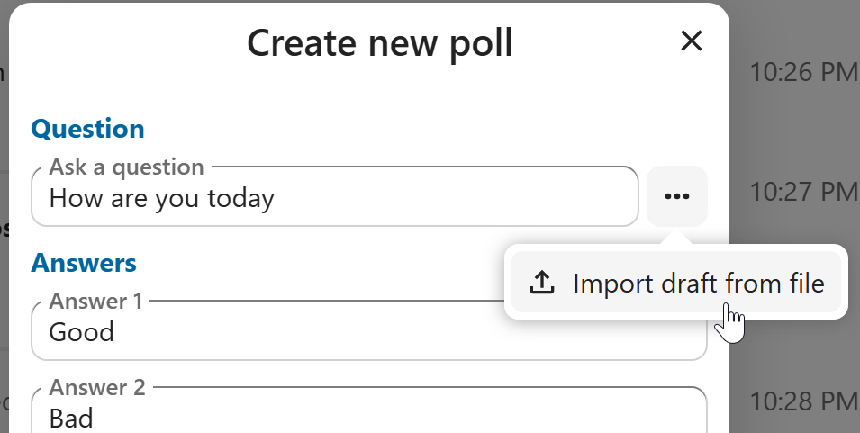
Closing poll is possible from the poll dialog.

As a moderator, you can create the poll directly or you can save it as a draft to edit it later.

You can find poll drafts in Shared items tab or next to the poll title input field.

Ρύθμιση υπενθύμισης σε μηνύματα
Μπορείτε να ορίσετε υπενθυμίσεις σε συγκεκριμένα μηνύματα. Εάν υπάρχει ένα σημαντικό μήνυμα για το οποίο θέλετε να ειδοποιηθείτε αργότερα, απλώς τοποθετήστε τον δείκτη πάνω του και κάντε κλικ στο εικονίδιο υπενθύμισης.
{kind=link}
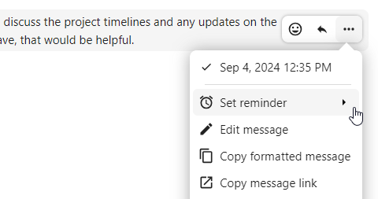
Στο υπομενού, μπορείτε να επιλέξετε ένα κατάλληλο χρόνο για να λάβετε μια ειδοποίηση αργότερα.
{kind=link}
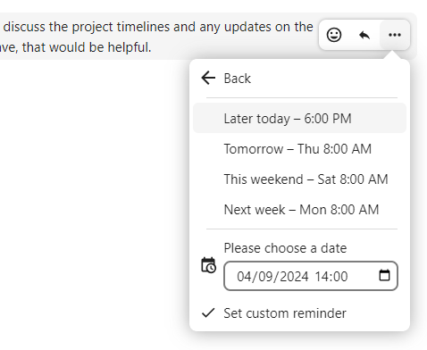
Απάντηση σε μηνύματα και άλλα
Μπορείτε να απαντήσετε σε ένα μήνυμα χρησιμοποιώντας το βέλος που εμφανίζεται όταν τοποθετείτε τον δείκτη πάνω από ένα μήνυμα.

In the ... menu you can also choose to reply privately. This will open a one-to-one chat.

Εδώ μπορείτε επίσης να δημιουργήσετε έναν απευθείας σύνδεσμο προς το μήνυμα ή να το σημειώσετε ως μη αναγνωσμένο, ώστε να μετακινηθείτε εκεί την επόμενη φορά που μπαίνετε στη συνομιλία. Όταν πρόκειται για αρχείο, μπορείτε να δείτε το αρχείο στα Αρχεία.
Σιωπηλά μηνύματα
Εάν δεν θέλετε να ενοχλήσετε κανέναν στη μέση της νύχτας, υπάρχει μια λειτουργία σιωπής για τη συνομιλία. Όταν είναι ενεργοποιημένη, οι άλλοι συμμετέχοντες δεν θα λαμβάνουν ειδοποιήσεις από τα μηνύματά σας.
{kind=link}
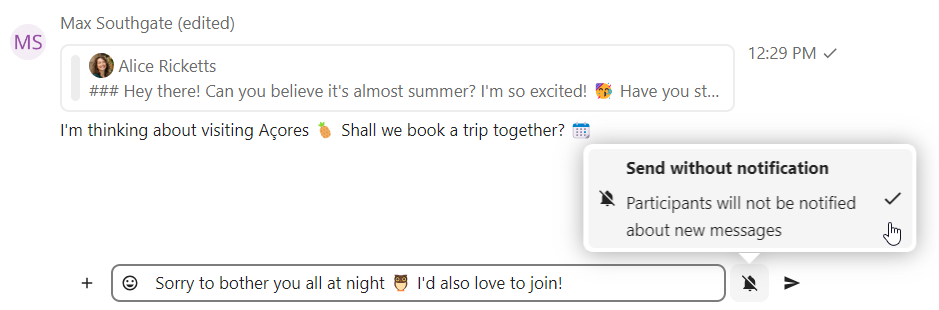
Διαχείριση συνομιλίας
Είστε πάντα συντονιστής στη νέα σας συνομιλία. Στη λίστα συμμετεχόντων μπορείτε να προάγετε άλλους συμμετέχοντες σε συντονιστές χρησιμοποιώντας το μενού ... στα δεξιά του ονόματος χρήστη τους, να τους αναθέσετε προσαρμοσμένα δικαιώματα ή να τους αφαιρέσετε από τη συνομιλία.
Η αλλαγή δικαιωμάτων ενός χρήστη που συμμετείχε σε μια δημόσια συνομιλία θα τους προσθέσει επίσης μόνιμα στη συνομιλία.
{kind=link}
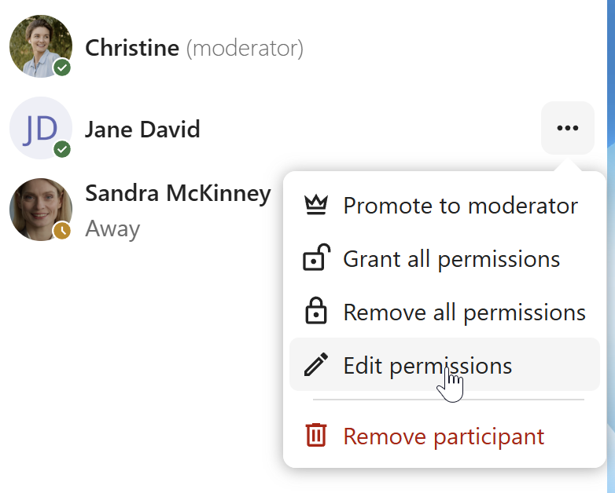
Οι συντονιστές μπορούν να διαμορφώσουν τη συνομιλία. Επιλέξτε Ρυθμίσεις συνομιλίας από το μενού ... της συνομιλίας στην κορυφή για να προσπελάσετε τις ρυθμίσεις.

Εδώ μπορείτε να διαμορφώσετε την περιγραφή, την πρόσβαση επισκεπτών, εάν η συνομιλία είναι ορατή σε άλλους στον διακομιστή και άλλα.

Ban participants
To help keep discussions safe and under control, moderators can ban participants from conversations. It could be internal users or guests (in this case their IP-addresse will additionally be banned).
In the participants list, select the user or guest you, and click Remove participant.
{kind=link}
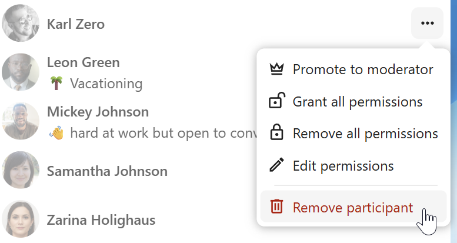
There, toggle checkbox Also ban from this conversation and provide a reason for the ban. The banned user will be removed and prevented from rejoining.

You can later find the list of banned users in the Moderation section of conversation settings.
Here, you can see the reason for the ban and revert it if needed.
{kind=link}
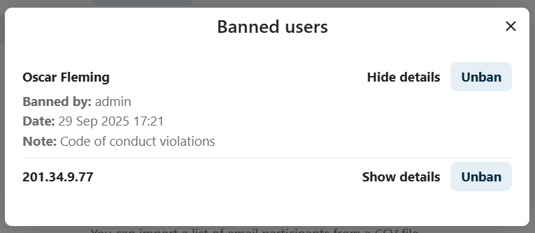
Λήξη μηνυμάτων
Ένας συντονιστής μπορεί να διαμορφώσει τη λήξη μηνυμάτων στις Ρυθμίσεις συνομιλίας στην ενότητα Συντονισμός. Μόλις ένα μήνυμα φτάσει στο χρόνο λήξης του, αφαιρείται αυτόματα από τη συνομιλία. Οι διαθέσιμες διάρκειες λήξης είναι 1 ώρα, 8 ώρες, 1 ημέρα, 1 εβδομάδα, 4 εβδομάδες ή ποτέ (που είναι η προεπιλεγμένη ρύθμιση).

Έναρξη κλήσης
Όταν βρίσκεστε σε μια συνομιλία, μπορείτε να ξεκινήσετε μια κλήση ανά πάσα στιγμή με το κουμπί Έναρξη κλήσης. Άλλοι συμμετέχοντες θα ειδοποιηθούν και μπορούν να συμμετέχουν στην κλήση.

Εάν κάποιος άλλος έχει ήδη ξεκινήσει μια κλήση, το κουμπί θα αλλάξει σε ένα πράσινο κουμπί Συμμετοχή στην κλήση.

Κατά τη διάρκεια μιας κλήσης, μπορείτε να σιγήσετε το μικρόφωνό σας και να απενεργοποιήσετε το βίντεό σας με τα κουμπιά στη δεξιά πλευρά της επάνω μπάρας ή χρησιμοποιώντας τις συντμήσεις M για σίγαση ήχου και V για απενεργοποίηση βίντεο. Μπορείτε επίσης να χρησιμοποιήσετε το πλήκτρο διαστήματος για εναλλαγή σίγασης. Όταν είστε σε σίγαση, το πάτημα του πλήκτρου διαστήματος θα σας βγάλει από σίγαση ώστε να μπορείτε να μιλήσετε μέχρι να αφήσετε το πλήκτρο διαστήματος. Εάν δεν είστε σε σίγαση, το πάτημα του πλήκτρου διαστήματος θα σας βάλει σε σίγαση μέχρι να το αφήσετε.
Μπορείτε να αποκρύψετε το βίντεό σας (χρήσιμο κατά τη διάρκεια κοινής χρήσης οθόνης) με το μικρό βέλος ακριβώς πάνω από τη ροή βίντεο. Μπορείτε να το επαναφέρετε ξανά με το ίδιο μικρό βέλος.
Μπορείτε να προσπελάσετε τις ρυθμίσεις σας και να επιλέξετε μια διαφορετική webcam, μικρόφωνο και άλλες ρυθμίσεις στο μενού ... στην επάνω μπάρα.
{kind=link}
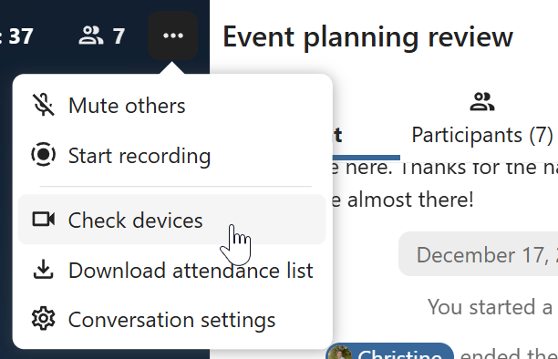
Από το διάλογο ρυθμίσεων πολυμέσων, μπορείτε επίσης να αλλάξετε το φόντο του βίντεό σας.
{kind=link}
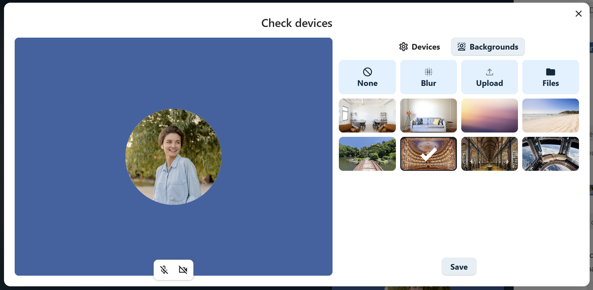
All these settings are also available as direct actions in the bottom bar.

Μπορείτε να αλλάξετε άλλες ρυθμίσεις στο διάλογο Ρυθμίσεις Talk.
{kind=link}
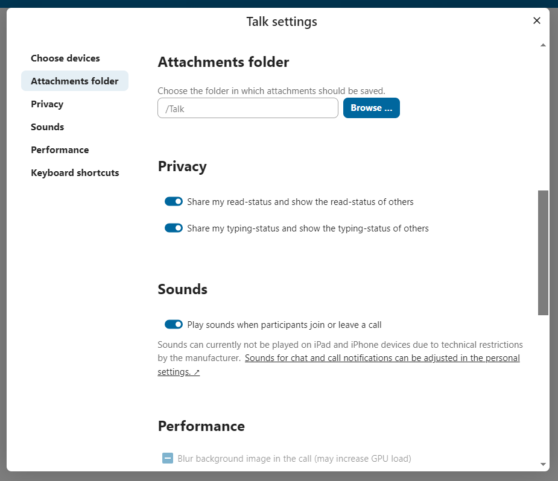
{kind=link}
Αλλαγή προβολής σε κλήση
You can switch the view in a call in the bottom bar between promoted view and grid view.
{kind=link}
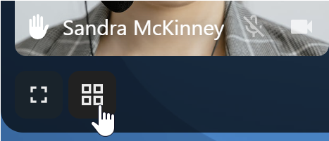
The grid view will show as many people as the screen can fit, allowing navigation with buttons on the left and right.
{kind=link}
Η προβολή προώθησης εμφανίζει τον ομιλητή μεγάλο και τους άλλους σε μια σειρά παρακάτω. Εάν τα άτομα δεν χωρούν στην οθόνη, θα εμφανίζονται κουμπιά αριστερά και δεξιά που σας επιτρέπουν να πλοηγηθείτε.

Download call participants list
You can download the list of participants in a call from the ... menu in the top bar. This will download a CSV file with the names and email addresses of all participants in the call.

The table in the CSV file contains the following columns:
Name: The name of the participant.
Email: The email address of the participant.
Type: Indicates whether the participant is a registered user or a guest.
Identifier: Unique identifier for the participant.
Compact view of conversations list
Compact view allows to hide last message preview in the conversation list, providing a more focused interface.
You can enable it from the Talk settings dialog in Appearance section.

Messages search in a conversation
In addition to global unified search, you can search for messages within a specific conversation. In the content sidebar of a conversation, click the search icon to open the search tab.

You can narrow down your search by using filters such as date range, and sender.

Threaded messages
You can create threads in conversations to keep discussions organized. The thread creation option is available in the new message additional actions.
{kind=link}
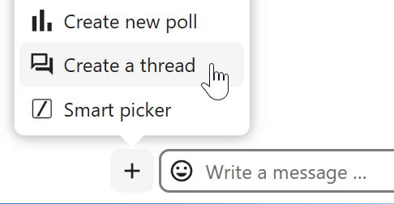
Then, you can add a title and description for the thread and start the discussion.

You can view all replies in a thread either from the replies button on the message or from Shared items tab in the content sidebar.
{kind=link}
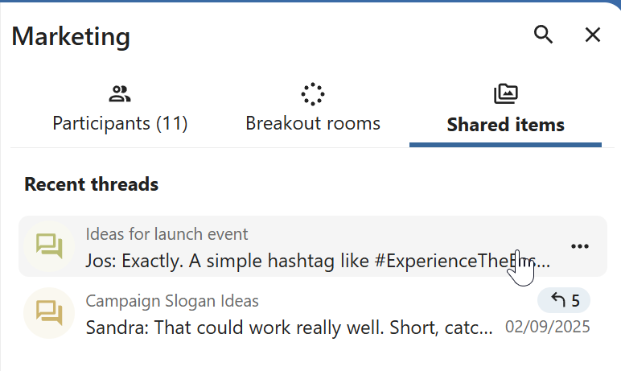
You can subscribe to a thread to receive notifications about new replies. It is possible to subscribe from the thread itself or from the sidebar.
{kind=link}
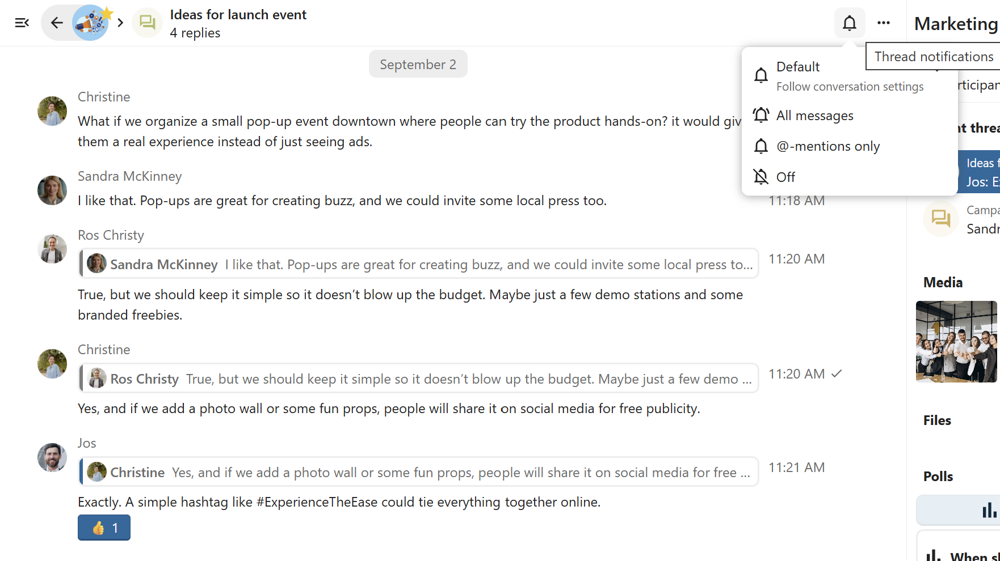
Subscribed threads are easily accessible from the navigation bar in Threads navigation.
{kind=link}
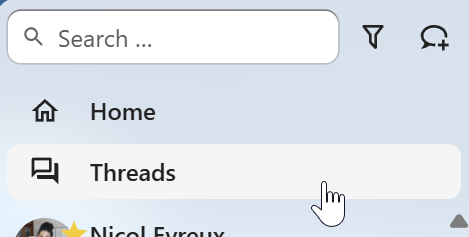
Editing thread title is possible from the thread itself or from the sidebars.
{kind=link}
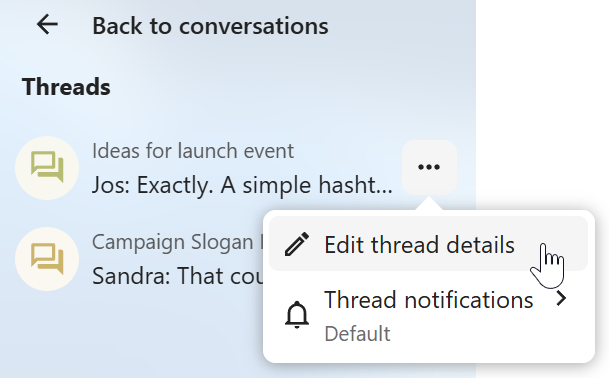